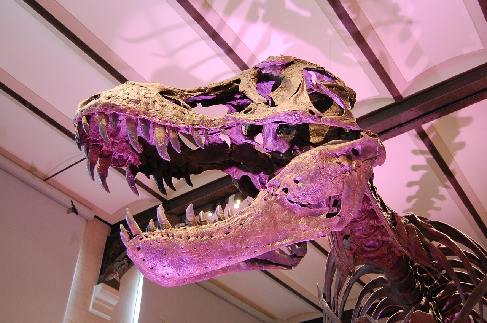
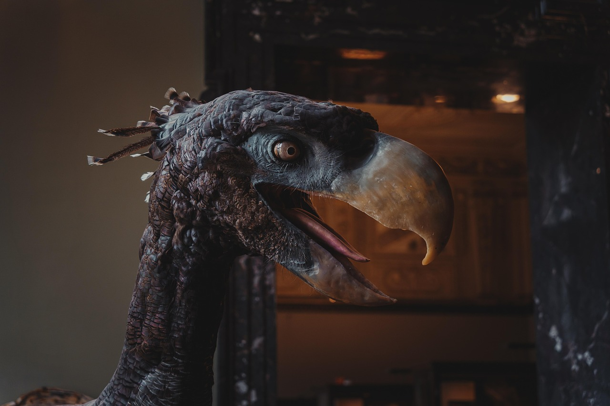

Museo Paleontológico Jurásico
Colosos del Pasado Era Extinta

DESCUBRE
TODO SOBRE ELLOS
Un viaje al pasado que nunca olvidarás
desde May 2, 2016

El Museo Prehistórico ofrece un recorrido por la historia de la Tierra desde hace millones de años. A través de fósiles, réplicas y exhibiciones interactivas, los visitantes conocerán a los dinosaurios, los primeros seres vivos y la evolución de la vida, descubriendo cómo era el mundo antes de la aparición del ser humano.

MUNDO MARINO Prehistórico
Title description, April 23, 2016

La Sala Mundo Marino Jurásico muestra los océanos de hace millones de años, donde habitaron grandes reptiles marinos como ictiosaurios y plesiosaurios, junto a peces y corales antiguos. A través de fósiles y recreaciones, los visitantes descubrirán cómo era la vida bajo el mar en la era jurásica.


Sala de botánica
Title description, April 7, 2016
Se exponen representantes tales como cianobacterias, algas, líquenes, musgos, helechos, gimnospermas, angiospermas y hongos; haciendo énfasis en las especies nativas, entre otras


nuevos descubrimientos
El año 2025 ha sido excepcionalmente prolífico para la paleontología, con el descubrimiento de 44 nuevas especies de dinosaurios hasta diciembre. Museos de renombre mundial han actualizado sus colecciones con piezas exclusivas y hallazgos recién descritos
INFORMACION
-
horarios
Martes a Domingo 10:00-13:00 hrs 14:00-17:00 hrs No atendemos feriados -
Dirección
Av. Benavides 5440 Lima 1801, Santiago de Surco Perú -
Entradas
*Niños/as y Estudiantes: S/8.00*Adultos regulares: S/12.00*Recorrido guiado para una sala: S/20.00 (7 personas como máximo) *Recorrido guiado para tres salas: S/30.00 (10 personas como máximo) *Carnet CONADIS: Gratis -
Depósito de muestras biológicas
El museo actualmente está reconocido como una Institución Científica Depositaria de Material Biológico por el SERFOR con el código de autorización N° AUT-ICND-2018-008
Historia
VISITANOS
excurciones charlas y conferencias juegos interactivos sala de exhibicion eventos especiales lineas de tienpo visitas virtuales modelos 3d cafeteria concursos videos educativos tienda del museo talleres Trends
FOTOS




Follow Me
Subscribe
Enter your e-mail below and get notified on the latest blog posts.